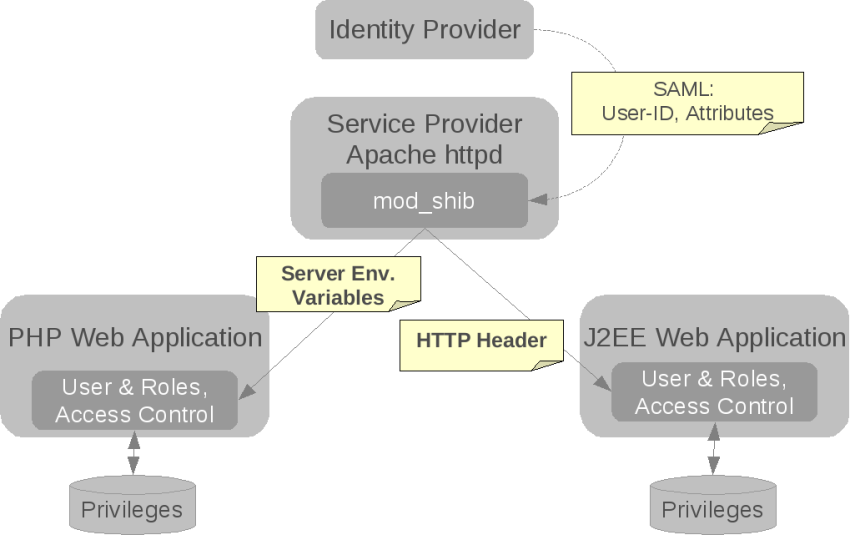

SHHAA stands for Simple HTTP Header Authentication & Authorization.
It's a J2EE Web Application Servlet-Filter to handle login and access-control based on HTTP header attributes, where those have been put there in the first place by a Shibboleth Service Provider.
Thus the filter integrates a web application with a federal authentication- & authoriztion infrastructure (AAI), like the SAML based Shibboleth Framework (where a Service Provider is one part of).
A Shibboleth Service Provider (SP) is in fact an Apache Webserver with a Shibbleth Module "mod_shib" which in turn connects the Webserver with the dedicated Shibboleth Daemon "shibd" installed on this machine.
For details about Shibboleth, installation, configuration and the architecture & concepts behind a Shibboleth AAI federation, please refer to the Internet2 Organisation's Shibboleth Home Site and its Wiki .
The Webserver then can be configured to protect as Shibboleth Service Provider certain locations, where the SP makes sure, that users have to authenticate first, and further the configured possible additional requirements (based on so called (SAML) attributes) to access the targeted resource are met. If not, the SP will deny access to the requested resource.
Shibboleth is an implementation of the SAML protocol standard.
SHHAA Filter relies in the background on a Shibboleth Service Provider.
The Filter internally uses/is-based-on session information (for authentication) and so called (user) attributes for authorization (access control decisions), all found/expected as attributes in the HTTD header and put there in the fist place by the said Shibboleth Service Provider ('SP').
That means, the web application must be under the "hood" or "awareness" of a Shibboleth Service Provider upstream.
The information flow:
For our shhaa filter the right-hand-side (j2ee web-app) of the diagram is interesting:
the Service Provider exports session- and user-attributes to the HTTP Header where the SHHAA Filter can find and exploit this data and make them easy available to the web-app (developer) by a simple API.
The Filter's session handling is fully based on Shibboleth SP session information put in the HTTP header by an upstreamed SP.
One could say the filter in fact does not handle authentication at all but instead delegates it fully to the said Shibboleth Service Provider and its AAI Framework behind.
shhaa listens to this special SP attributes in the header and immediately recognizes if something has changed:
Changes of those attributes always indicate a change in the users (Shibboleth SSO-)login- and current-session status.
Recognized attributes are * a Shibboleth-SP Session-ID, * the originally authenticating Identity-Provider (its socalled entity-ID) * and the login-timestamp.
Any change of those attribues means a changed session, even if it is the same user having "just reapeated" his login.
Fallback to Anonymous:
If/As-long-as the shhaa filter cannot find any SP session data (e.g. due to a Shibboleth Lazy Session Setup, @see installation howto
,
it will fall-back-to and provide an anonymous username (configurable, default "anonymous") and the usual (java) web application JSESSIOND as session identfier.
shhaa filter comes with an own authorization module, too.
It works similar to the native Shibboleth SP authorization and uses the (pre-fetched) user attributes, originally provided by the user's Identiy Provider, as basis for its access control decisions.
The idea is to give the developers using shhaa for their webapps the option
to enforce their own, "local" autzorization rules, without having to configure/mess-arround-with the native Service Provider in front of the webapp.
The exact behavior of shhaa filter highly depends on its configuration details (@see configuration howto ).
But its important to understand for a developer using shhaa,
that it can do automatically re-route (forwards/redirects) original requests to different locations depending on the circumstances:
so it can re-route automatically to a (SSO) login site if needed (user not logged in yet), or display an access-denied page, a logged-in information page etc...
usually it acts like this:
both notifications are displayed (re-route/forward) only once on the request the issue has been recognized,
on the next request (e.g. reload) the originally requested site is provided...